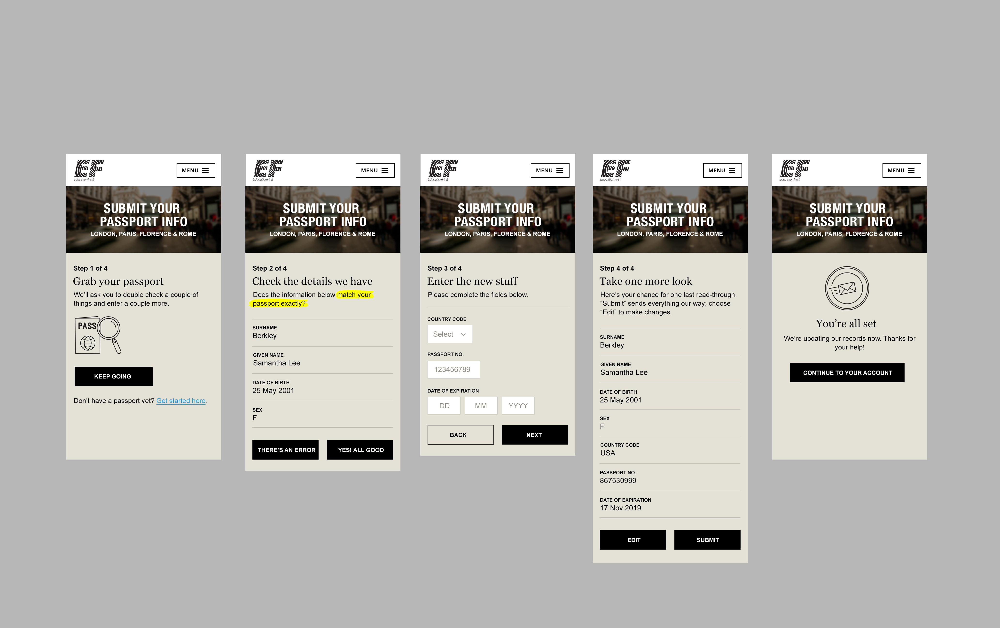
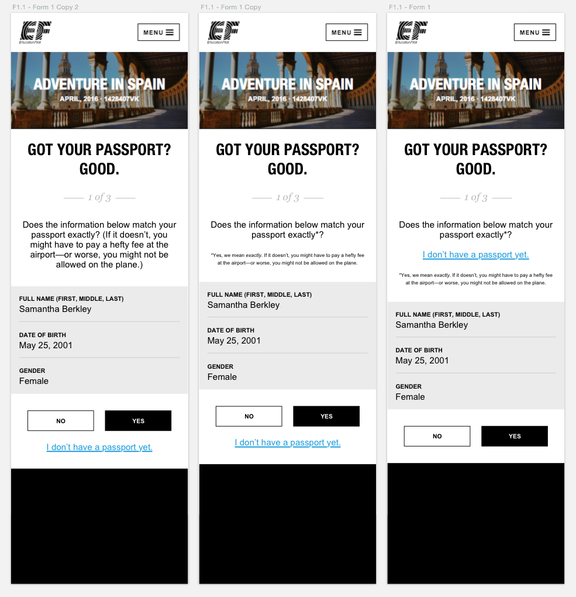

Technical Lead and Development
EF Passport Entry Website
The Project
Education first sends 250,000 students a year from the United States to all corners of the world. This means that they also need to processes hundreds of thousands of students passport information. Before my team and I tackled this problem we were processing this information by email - students would take pictures of their passport, and send them to their teachers, who would take lists of passport information and email it to tour consultants, who would then enter the same passport information into our companies CRM.
My Role
For this project I was the technical project lead, in charge of leading the planning dialogue between developers (myself and two others), designers, and business analysts and eventually deciding on a UX. When it came to implementation, I picked the technology used to build the microsite and broke down the task so that more than one engineer would be able to work on it simultaneously. I also wrote the entirety of the client-side software for the project.
Challenges
Business constraints. We use our passport information to buy plane tickets for our students. This means that if there is a mismatch (even just a single letter discrepancy) between the student’s name and their passport information, we might end up buying them a ticket that they are unable to use at the airport. Additionally, we do not allow our customers to change their names themselves because this would be a liability if they changed their name by accident. So during the passport entry flow, we needed to seamlessly test to make sure that their information in our system matched the information they were about to enter into the database, and allow them to call HQ if there were any issues. A couple prototypes of the design for this flow are below.
Application layers. EF’s technology stack is very complicated and for this project I needed to break down tasks at all levels of our information systems. The request needed to hit a secure api and then translate that into another request to write to our CRM product. I wrote tickets for other engineers in other systems to work on this project so that everything would fit together seamlessly.
Entry point. The business had several ideas for how to release this application, but eventually landed on an email only release to start. This created a really interesting problem which was that our application needed to be able to generate a totally unique passport entry form for a unique URL. We would email that URL out to users and they would follow that to view the site.
The Solution
The web application we built fit squarely within all of our business and technological constraints and was able to securely connected our customers directly to us. The microsite allowed our passengers to log in securely and send encrypted passport information directly to our business database. We estimated that the application saved the company more than 500 thousand dollars per year in time spent processing passports!